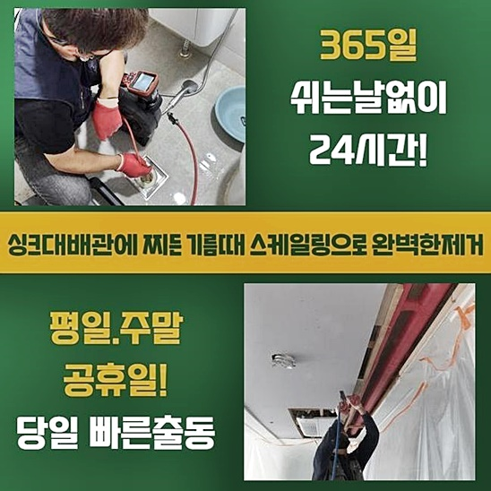
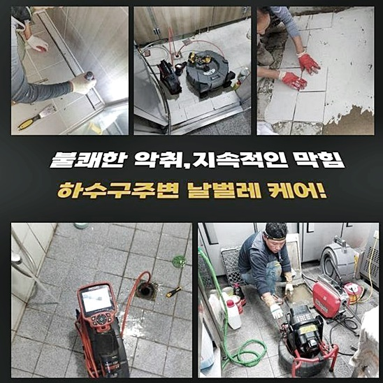
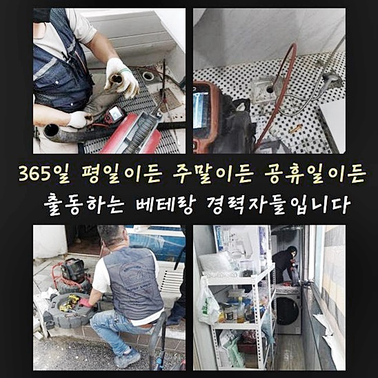
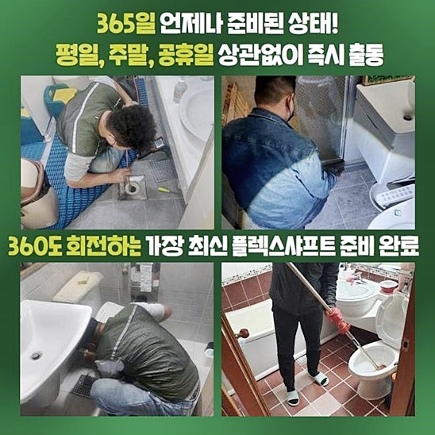
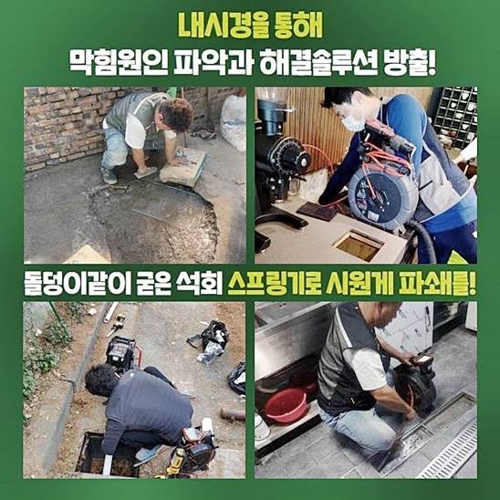
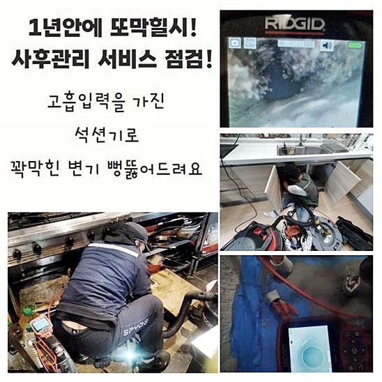

🏠 양평 옥천면오수관뚫음 지평면 배수구뚫기 출장설비
용인시 처인구 고압세척 전문 시공 후기

📋 작업 개요
- 위치: 용인시 처인구, 수원시 영통구, 화성시 동탄
- 서비스 유형: 고압세척, 내시경점검
- 작업 일시:
- 업체명: 하수구수사대 (010-5615-2118)
🔍 문제 상황
양평 옥천면오수관뚫음 지평면 배수구뚫기 출장설비
수도를 상당량 빠지게하는 요식업의 경우에는 대개 물이 안빠지는 문제들을 경험하십니다
아무래도 조리과정 중에 잔해가 하수관으로 흐르게되며 이로 인해 배수관이 막혀버리고 가지고있던 제품을 사용한 뒤 문제들이 완화되기도 하겠지만 재차 막히게 될지 몰라요
전문적인 업체들에 문의해도 하루 일을 스탑시켜야 되기에 그마저도 쉽지않죠
자가조치들을 써서 한시적으로나마 해결해도 언제 그랬냐는 듯 또 생기게되니 추천하기론 안정적인 해결책을 통해 온전히 세척하는것이 좋겠습니다
금일엔 식당으로부터 하수들이 내려가질 못하여 영업자체를 못한다고 황급히 의뢰를 하셨는데요
신속히 방문드려 배수관을 인지하기에 이르렀습니다
역류문제도 나타나면서 통수오류를 막론하고 이물들도 흘러넘쳤죠
특정 지점에 이하수가 굳게되는 현상들이 불거졌다는 것을 뜻합니다 어디에서 막히게된건지 체크를 해보아야 문제들을 빠르게 시정할 수 있답니다
그리하여 내시경장비를 이용해서 어떤 양상으로 구성되어 있는것인지 어디쪽에서 막히는 양상이 심한지 체크해보았어요
노즐자체가 굵지않아 벽쪽에 슬러지들이 누적된 작은 배수관이여도 적재적소 이용되요 들여다보았더니 L자형 배수관도 보여졌어요
구부러진 배관이여도 무리없이 휘기에 수직으로 꺾여지는 부위도 세세히 체크해볼 수 있어요

🔎 원인 분석
💡 전문가 진단: 정밀 진단 장비를 사용하여 슬러지의 고착 여부를 판명하고 타격/세척 작업을 실시했습니다.
조리공간에서 이용되는 하수구인 탓에 육안으로 봐도 기름슬러지와 이물의 뭉치들로 얼룩진 상태였는데요
심층부까지 살피니 고압의 분사 청소들이 필요했는데요
고객께서 질문을 해주시는 사안인 고압세척의 경우 저희업체가 저희도 빠르게서 찾아뵈어 증상을 관찰해보고 필요성에 대해 말씀드리고 있으니 무턱대고 고압노즐 분사방식을 실시하는 현장은 없을것이라 장담합니다
공동관로도 정상이 아닌게 확실했기에 탐지기장비를 사용해 어느 배수관이 잘못된것인지 체크해보았어요
하수관으로 내시경기기를 투입시켜 탐지도구를 작동해줘요
이 기계를 운용하여 이물이 가득한 위치를 확인합니다
약간의 피치가 있는 경우에도 투입해준 라인들로 길이들을 유추해보았는데요
그러나 공동관로도는 길기때문에 관로탐지장치들을 써서 해당 지점을 특정시키는건데요
막히게 된 부위를 관찰하였더니 바깥쪽부터 심층부까지 막히게된 사실을 알게되었어요
지금까지 배수장애가 발생되며 증세를 심화시킨 기조는 외부 배수구들이 막혀있었기 때문인데요
기름뭉치가 진흙처럼 쏟아져 나왔습니다
다양한 식자재를 많이 쓰이는 조리공간이기때문에 가정에서와는 내측 라인의 상당량의 기름슬러지의 이물들을 목격했어요
쉴틈없이 식재료를 다루고 개수대에서 씻는다면 배수관으로 이런저런 잔해가 흐르게되는 형태는 당연한데요

🔧 작업 과정
증세가 생겨났을 경우 선제적으로 대책을 실시하면 무리없이 문제 없이 쓸 수 있겠습니다
통수가 심상치않으면 신경써서 관리하셔야합니다
더군다나 기름들을 많이 쓰이는 음식점일수록 가열점의 온수들을 배수관으로 들이붓고 다양한 식자재를 청소하고자하나 권장드리는 대응법은 아니죠
곧이어 배수라인의 기름들을 청소해준 뒤 이물이 심한 부위부터 차근히 이물제거를 진행시켰어요
스케일링의 과정은 샤프트장치로 배수구로 케이블들을 삽입하여 체인들이 돌면서 흡착된 이물을 빠르게 탈락시켜줘요
고착물의 경우 체인쪽에 걸림과 동시에 제거까지 이뤄지죠 고압수를 못견딜만큼 내구성이 많이 떨어져있다면 샤프트로 이에 준하는 결과물들을 만들어내는게 가능합니다
내부와 외부의 설비에서도 증세가 야기된 상황으로 거시적인 청소가 이뤄져야했습니다
집수라인부터 안까지 샤프트장치 운용을 실시해준다면 벽면에 이하수가 순서대로 청소되며 물빠짐이 이뤄지게 됩니다
하수관으로 잔여물질들이 상당하여 지속적으로 샤프트도구 노커로 기름자체를 청소했습니다
이전에 하수관을 이용해주면서 악취들이 심각수준이라고 하셨어요 세척과정이 완료된다면 악취들이 발생되는 상황은 없죠
외부 하수관으로는 구경도 넓지만 꾸준히 관리적 측면의 부재로 단단해진 잔해가 축적된 모습이였습니다
배수구로 뜰망을 써서 수도를 걸러주며 작업진행을 해줬습니다
슬러지들이 세척되며 통수가 조속히 이뤄지니 이후 절차의 작업이 훨씬 어려움없이 진행되었습니다 집수설비의 경우 보통 가지배관에서 빠져나오는 하수가 한 지점에 결집되어 빠지게되죠
배수구로 관로 중에 한 곳이 막혀버리게 될 시 타 부위도 갑자기 막혀버리는거에요
꾸준하게 샤프트장치와 내시경을 투입시켜서 점검과 작업합니다
내시경장치를 통해서 내부를 주시하며 또 다른 이상이 있는지 확인해보기 수월하답니다
하수관으로부터 외측으로 연결되있는 하수도를 뚫기위하여 탐지도구를 통해서 꼼꼼하게 검토해 청소를 진행시켜주었습니다
꼼꼼한 점검 덕에 이물질들을 걷어내어 손쉽게 기름슬러지의 이물들을 제거했습니다
하수도로 공동관로도 매립된 모습이 안쪽보다는 복잡하게 이뤄져있어서 동시다발적인 기기들을 투입시켜 연결되는 부분에도 청소들을 이행시켰어요
내부라인에도 슬러지들이 존재하진않는지 내시경장비로 체크했습니다 내시경으로 진단을 하니 처음과 다르게 이물하나없는 배관을 보았습니다


✅ 작업 완료
종료에 앞서 하수도로 물들이 배출되는지 확인해보았어요
배수검열을 실시하니 배수구로 시원히 내려갔어요 주방의 배수구로는 잔해물이나 식재료때문에 배수로가 막히게 됩니다
배수구로 원인을 확실하게 없애주고 필터용품을 신경써주시고 사용 시 물들을 배출시키는 시점에도 주의해야겠습니다
이와 더불어 때때로 점검을 거치면 배수설비가 막히지않고 사용가능합니다
배수관으로 증세가 발발했을 경우 언제라도 의뢰를 맡겨보세요!



⚠️ 하수구 배관 막힘 예방 및 관리 가이드
- ✅ 머리카락, 비닐, 물티슈 등 물에 분해되지 않는 이물질은 절대 흘려보내지 마세요.
- ✅ 기름기 많은 식기는 설거지 전 키친타올로 먼저 기름때를 닦아내세요.
- ✅ 주기적으로 배수구에 뜨거운 물을 가득 부어주어 유지방 고착을 방지하세요.
- ✅ 작업 후 1년 이내 재발 시 무상 A/S 보증 서비스를 제공합니다.
💡 핵심 정리
- 확실한 장비 작업(내시경 점검 및 샤프트 스케일링)으로 원인을 뿌리 뽑습니다.
- 작업 후 1년 이내에 동일한 부위 재발 시 100% 무상 A/S 서비스를 보장합니다.
- 서울 · 경기 · 인천 전 지역에 24시간 언제든 긴급 출동할 수 있도록 항시 대기 중입니다.
❓ 자주 묻는 질문 (FAQ)
🚨 용인시 처인구 고압세척 문제로 고민이신가요?
정확한 원인 진단과 확실한 시공으로 재발 없는 해결을 약속드립니다.
24시간 긴급 출동 | 서울 · 경기 · 인천 전지역 | 1년 내 재발 시 무상 A/S